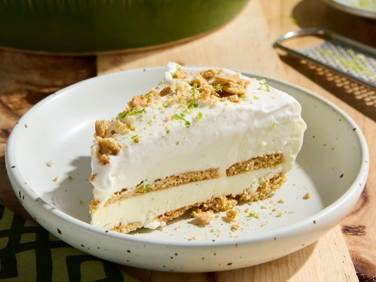

Icebox Pie

4-Ingredient Icebox Pie from Allrecipes
This pie is the perfect combo of flavors and textures
- sweetened condensed milk
- keylime zest or lime zest
- keylime or lime juice
- graham cracker sheets
- powdered sugar
- vanilla extract
- crushed graham crackers (optional)
- gather all ingredients
- Whisk together sweetened condensed milk, lime zest, and lime juice in a medium bowl
- Beat the cream in a medium bowl with an electric mixer on medium until soft peaks form (tips curl). Fold whipped cream into the lime mixture
- Arrange half of the graham cracker pieces in an even layer in the bottom of a 9-inch pie plate
- Spoon half of the filling over the top and gently spread to an even layer
- Top with the remaining graham cracker pieces and the remaining filling
- Cover and freeze 4 hours or until firm
Home